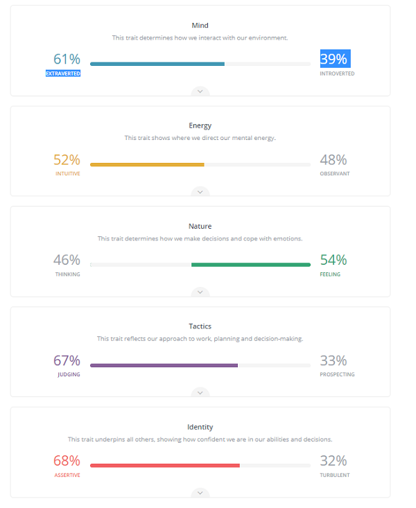
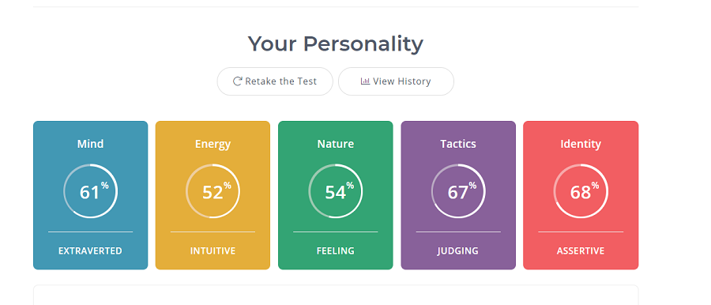
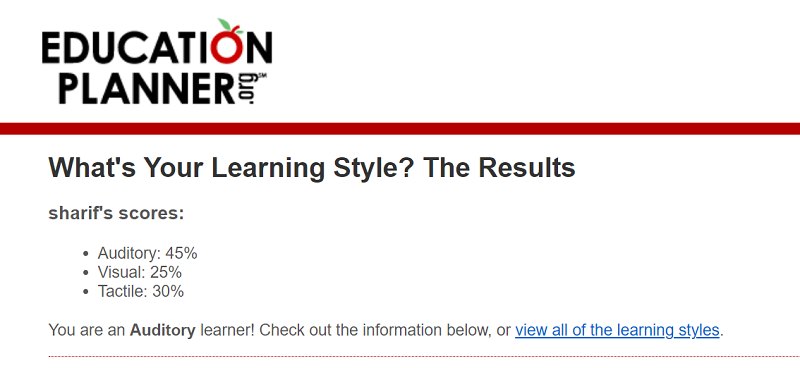

Personal Information
I am from Afghanistan came to Australia eight years ago and I finished year 12 in Pakistan. and when I came in Australia on 2013, I started studding IT as a parts time and was working as a full time too. I speak Dari (Persian) and also familiar to other languages such as Arabic, Urdu, English, Persian. I love soccer. I am playing soccer three days a week.
Interest in IT
I love IT. I love to play with specially coding. I love to know more about technology I like to face an issues when coding and find out the issues.I remember when my cousin Graduated from Computer science 10 years ago a day I requested him to give me some basic information about what he learned form computer science. When he gave me some idea from that day slowly IT become in my heart. I have some experience of IT. I bought my own server from blue host and I am designing website for small business and charging them for host and domain names. I used to study in Monash university and in my first year I decided to start a business, I stopped studding at Monash as a temporary after a year when I get back to Monash they had not Online Study services that’s why I have chosen RMIT. And I expect to learn many things related to IT.
Ideal Job
Job Title
Description
- The Position of IT Guy, employee in this job is responsible to handle support of service including: printer, hardware, software and other staff related to IT.
- The skill which is required is to understand how to solve a problem and how to operate the systems.
- According my current skills I can handle the printing system, application and network system.
- To obtain the skills and qualification which is required in this position I think it can be very easy by practising and getting more information in IT. Studding without practising is nothing.
Personal Profile
here is three personal test that i have done
The results of an online Myers-Briggs test
 The results of an online learning style test.
The results of one further online test of your choosing.
Answer The Questions
- What do the results of these tests mean for you?
Result of these tests shows my behaviour, activities on daily basis. somehow it shows the way of my thinking. - How do you think these results may influence your behaviour in a team?
It could be effective in a team and it may influence more in a team when describe the result. - How should you take this into account when forming a team?
In a team work it is essential to grab all member`s idea the way of thinking of each member is different I can consider my result on how to take into account by describing and giving more information about it to members of team.
Project Idea
Overview
I considered an inventory management system for an Auto Parts company it is essential to have an inventory system that cover their needs and requirements. That’s why I decided to choose an inventory application for a company which they stock parts (Auto Vehicle Parts). And this inventory application is useful for and allows them to stock and manage their Goods. The application has many functions that allow user to manage their stocks, generate invoices, manage their clients, manage their employees and attendance of their employees. There is another function which is called Transections. it allows user to generate daily incomes and expenses report.
Motivation
In some type of business that they stock their goods such as Auto Parts, Supermarkets and etc. required an inventory system to manage their stocks. Inventory management system is a good practice for any company. proper inventory management really can make or break a business. A good inventory management strategy improves the accuracy of inventory orders and it support and organized warehouse. Inventory management system can have a real-time and monetary benefits. By keeping track of which products, a company have on-hand or ordered, and it save times. Inventory management devices such as barcode scanners and software, can help drastically improve Company`s efficiency and productivity
Description
Here is an Example of process from beginning till end of a part that getting stock. Each Vehicle has a key when a car gets entered in a yard user generate a barcode and that car and that barcode will be attached on the car. Now user add each parts of that vehicle by identify the created barcode in the system. Each time user for example want to sell a tail light of that car system auto reduce from stock.
Tools and Technologies
Tools and technology needed are:
- Computer PC: allow user to display navigate system.
- Scanner device: allow user to scan a part.
- Ipad:to take photos of a car and each part of that Vehicle.
- Internet connection: Need internet connection to manage the inventory. system online and display on the website for customers.
Skills Required
Skills for this Inventory management system required is need the developer to have the skill with HTML, PHP, JAVASCRIPT, CSS AND MYSQLI. They person should have at least two years of experience with above languages and also need a designer to design the interface of application. Need mobile app developer to develop an app. Need IT Person to be familiar with hosting environment to host the application while it allows the customers to display parts online, order online and to be in touch with customer service.
Outcome
If the project is successful the entire business getting a lot of profit such as it can be save times for example a customer call sales person to ask for a head light of Mazda CX-9 year of 2009. Here if the system is not exists, sales person has to go and check the Year, make and model of the car manually and come to reply the customer if the part exists in stock or not. The system makes it easy for sales person to response quick to clients.